+
A.3 | VELMA Contaminant Modeling Demonstration: Longfellow Creek Example
Overview (Tutorial A.3 - VELMA Contaminant Modeling Demo: Longfellow Creek Example)
This document is a detailed step-by-step tutorial for configuring VELMA 2.1 to simulate contaminant fate and transport within a watershed. The tutorial example used is a subwatershed of Longfellow Creek, a mixed-use urban watershed draining in Seattle, WA.
This A.3 contaminant modeling tutorial is a companion to the two listed below:
- Tutorial A.1_HowTo_VELMA Contaminant Modeling Conceptual Framework
- Tutorial A.2 - Configure VELMA for Simulating Contaminant Fate and Transport
This tutorial provides instructions for running a specific example scenario using VELMA 2.1's graphical user interface (GUI).
Through that process scenario it introduces VELMA 2.1 and some of its capabilities. It is not a comprehensive guide to VELMA 2.1. Refer to the documentation (McKane et al. 2014) and the VELMA 2.1 tutorials enclosed here for further information.
Requirements and Preliminaries
Section 1 Topics:
- Hardware Requirements
- Running PowerShell
- Checking for Java 8
- Installing Java 8
- VELMA .jar Files
(If you are already familiar with these topics and confident your computer meets their requirements, you may skip ahead to Section II.)
Hardware Requirements: You will need a computer with the following
- Windows 10 as its operating system.
- 4 Gigabytes ("GB") of RAM at a minimum (8 GB is preferred, more than that even better).
- Approximately 20 GB of disk space available for used.(A little less may still work, and more cannot hurt.)
- As you type, the Start Menu should automatically search for powershell-related items on your computer. If Powershell is available (and it should be on any standard Windows 10 computer) then it will appear as one of the items the Start Menu's search results list, and likely as the "Best match" item:
Running PowerShell: You must be able to access and run a Windows PowerShell
- Click the Windows Start Menu button to open the Start Menu.
- Type Powershell and open the Windows PowerShell app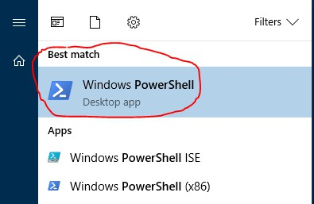
- If no item named "Windows PowerShell" or "Windows PowerShell (x86)" appears in the Start Menu search results, you do not have access to PowerShell. You will need to install it or gain access to it before proceeding. However, Windows PowerShell is part of the standard Windows 10 distribution, and should be available.
- Start a Windows PowerShell console by clicking on the "Windows PowerShell" item in the Start Menu
A console window should open like this:
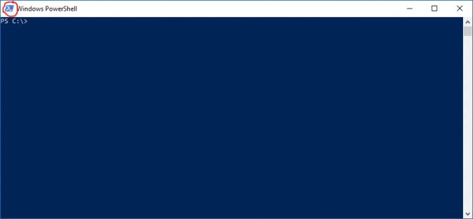(Your console window may have different dimensions, colors, and fonts than the example above. You can customize all of these settings by right-clicking the PowerShell icon - circled in red above.)
Checking for Java 8: You must have a Java JRE, version 8 or later, installed on the computer
- Verify whether JRE installation and version using the PowerShell window you started above. (Or, open a new PowerShell window if you have already closed it.)
- At the PowerShell window's prompt, type the following command: java -version
- If you have a Java JRE installed, you should see something like this: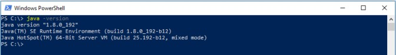
- If the version begins with "1.8" or a higher number (e.g. "1.9") you have an acceptable Java JRE installed and available. However, if the version begins with "1.7" or a lower number, you will need to install a newer, more- recent Java JRE.
- If no Java JRE is installed or accessible, then you will see something like this: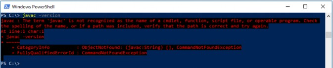
(Note: the example above used "javac" to trigger a "not found" message on a computer that actually has a Java JRE installed. On a computer without a Java JRE, typing "java" would have had the same-looking result.)
Installing Java 8: How to install it onto your computer
- Go to the following Oracle company webpage: https://www.oracle.com/technetwork/java/javase/downloads/jre8-downloads The page looks like this: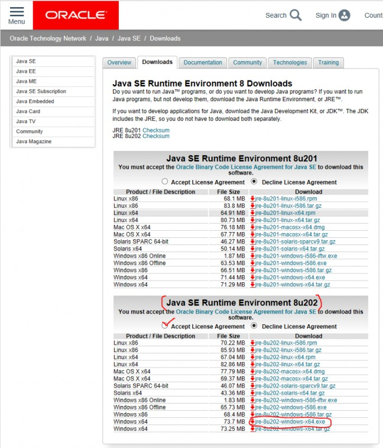
In the "Java SE Runtime Environment 8u202" section of the page, click "Accept License Agreement", then click the Windows x64 installer link: "jre-8u202-windows-x64.exe".
After downloading the .exe file to your computer, double-click it to run the installer, and follow the installer instructions.
Note: You must have VELMA's .jar files installed and available on your computer at this point.
Starting the VELMA GUI
Starting the VELMA GUI
Section II Topics:
- Starting the VELMA GUI
- Overview the VELMA GUI's Layout
The VELMA GUI is named JVelma.jar. You can start the GUI by double-clicking the JVelma.jar file from a File Explorer window, but we do not recommend this method because VELMA will likely run out of memory during a simulation. Double-click starting the GUI allocates a default (and relatively small) amount of memory to the process - it's usually not enough. To explicitly specify the amount of memory the GUI runs with, follow the steps below:
Open a PowerShell window (as described in part I of this guide) and type the following startup command at the window's prompt:
java -Xmx1g -jar "C:\Some\full\Path\JVelma.jar"
Here's an example:
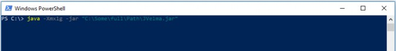(If -but only if-- your path contains NO whitespace, you can omit the double-quotes" - see Appendix 1 for further discussion as well as other tips.)
Here's what each part of the command means:
- java invokes the Java JRE, which in turn will start and run the GUI.
- -Xmx1g allocates 1 Gigabyte of memory to the GUI/simulator. The "-Xmx" part indicates "memory allocation" do the Java JRE, the "1" is how much, and the "g" means "in Gigabytes". You can allocate more memory by increasing the numeral (e.g. from 1 to 4) but if you allocate more memory than your computer can make available, JVelma will fail to start properly.
- -jar indicates to the java JRE that the next argument on the command line is the .jar file to run (and the directory path of its location).
- C:\Some\full\Path\JVelma.jar is the "fully qualified" directory path and name of the JVelma.jar file - i.e. the VELMA GUI. Of course, this example path should be replaced by the actual, fully qualified path to the location of JVelma.jar on your computer. "Fully qualified" means that the path starts at a disk drive letter, and includes all directory names (separated by backslashes) down to the JVelma.jar file itself.
If the JVelma GUI successfully loads and starts, you will see the screen below:
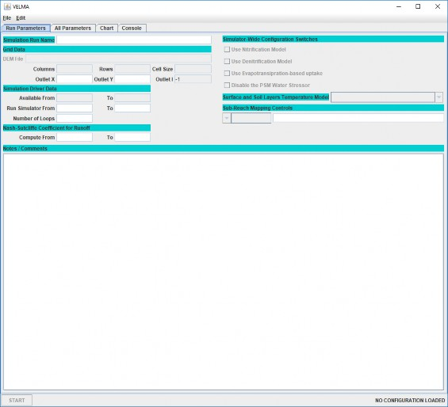Note the "NO CONFIGURATION LOADED" message in the lower-right corner of the GUI's panel.
This means you are ready to load a VELMA simulation configuration and run it.
Here is a brief overview of the GUIs layout and features:
(If you closed the GUI after performing the steps above, re-open it by following those steps.)
When VELMA starts, you see the blank GUI and the menus and tabs used for configuring and running simulations. The image below shows the top portion of the main GUI panel:
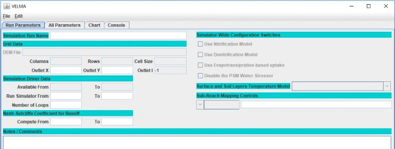Key Features of the main GUI panel:
- The "File" menu contains items for loading and saving simulation scenarios. (It also contains an "About" item which reports VELMA's version info.)
- The "Edit" menu contains various items for creating and modifying a simulation scenario's configuration / parameters.
Four tabs each tab switches the GUI to display a different panel:
- Run Parameters: a high-level summary of the scenario. Some core parameters and their values are accessible here for convenience. The Notes / Comments section displays any notes about the scenario you wish to record. The Run Parameters tab is initially visible when the VELMA GUI is started.
- All Parameters: the complete list of all the scenario's parameters and their values, along with a set of filter controls that can be used to narrow the set of visible parameters.
- Chart: during simulation runs, this panel displays user-selectable graphs of the simulator's runtime behavior. When the GUI isn't running a simulation, this panel displays a "Currently Unavailable" message.
- Console: during simulation runs, this panel displays status messages that the simulation engine would have otherwise written to the PowerShell window. Use the messages in this panel to troubleshoot model crashes. When the GUI isn't running a simulation, this panel is mostly blank. Loading and Running an Example VELMA Simulation
Section III Topics:
- Running a VELMA Simulation
- Monitoring a running VELMA Simulation
The Longfellow watershed example data contains several pre-configured example VELMA simulation scenarios. You can load and run them using the VELMA GUI.
Running a VELMA simulation from the GUI
- Start the VELMA GUI, following the steps from part II of this guide.
- Open a File Explorer window and navigate to the XML folder of the Longfellow_Example directory. As an example: (details and file names will differ on your computer)
The XML directory contains .xml files - each file contains the configuration for one VELMA simulation scenario.
Notice that the Input and Results locations names are red. This indicates that the locations are not found on the current computer.
For these example scenarios, the input location is the Longfellow_example\DataInputs directory, and the results (or outputs) location is the Longfellow_example\
Set correct input and output locations by any of the following methods:
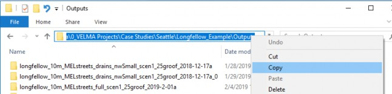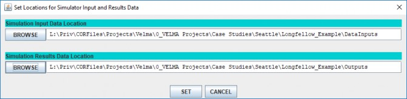- Click the BROWSE buttons to open File Explorer windows, navigate to the appropriate directories and click "Open" to select them.
- Click the text fields for the Input and Results location names and type in the fully-qualified path names to appropriate directories.
- In a Windows File explorer, navigate to the appropriate directory, double-click the location name text box, then right-click and click the Copy item. Finally, return to VELMA GUI's "Set Locations …" window, click into the appropriate location name text filed and type Ctrl-v ("paste") to paste the full path in place.
Click the SET button to set the locations for the configuration.
The dialog will open to the same directory you loaded the .xml from, so you should be able to click the "Save File" button without changing anything.
Monitoring a Running VELMA Simulation
After the clicking Start, the simulator status indicator in the lower-right corner should change
from: 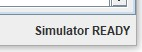to: 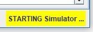, which indicates that the VELMA simulator engine is initializing and preparing to run. Depending on the size of your simulation and how capable your computer is, this can take anywhere from a few seconds to many minutes.
When the simulator completes initializing, it will start running, and the lower-right corner status message will change to look like this 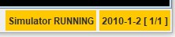
The GUI will also automatically shift to display the "Chart" tab panel, with the "Time Series" chart as its default display as shown below:
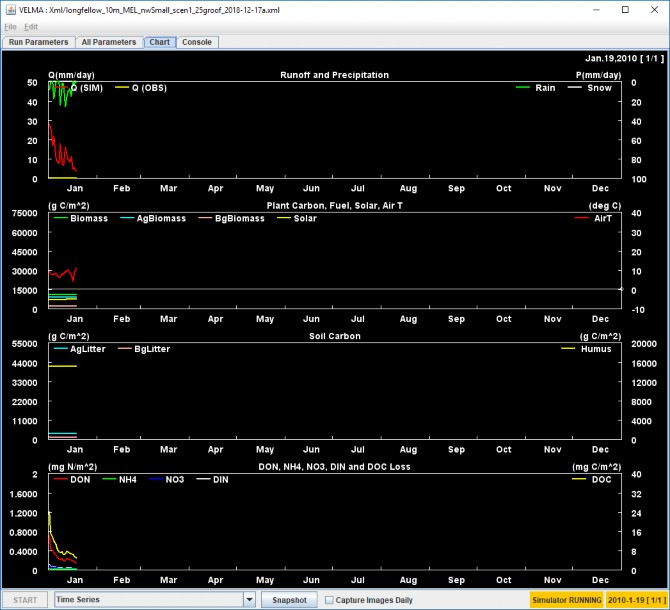You can shift between the various tab panels in the GUI while a simulation is running, but you should not (and generally, cannot) alter the simulation parameters, although you can view them.
The most useful tab panels during a simulation run are the "Chart" and "Console" panels.
The type layout of runtime data displayed in the Chart panel is selectable via the Display Selector that appears next to the Start button when the Chart panel is active. Click the selector's drop-down button to display the list of data/layouts. The following screen-capture shows using the selector's list to change the Chart panel to display Soil Moisture spatial (and some temporal) data:
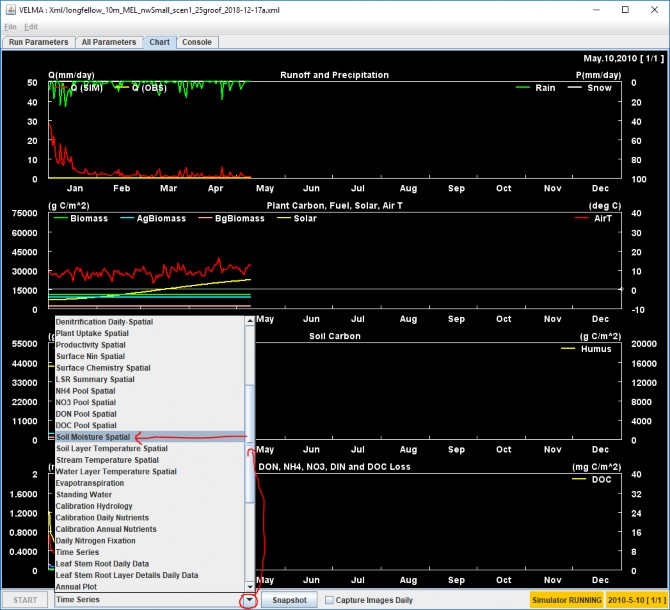Here is what the Chart display looks like after the above selection:
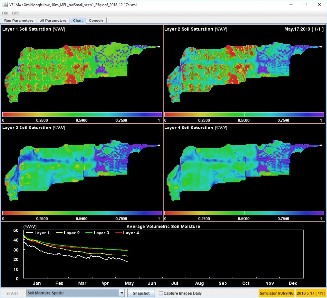Clicking the "Snapshot" button captures the current Chart display. The captured image appears in the simulation's results directory as a .PNG file with the word "out_" prefixed to the simulation name.
Clicking the "Capture Images Daily" checkbox makes the GUI capture one .PNG per simulation step (i.e. day) until it is clicked again (i.e. unchecked). The images captured appear in the simulation's results directory as a group of .PNG files, each name prefixed with "day_" and suffixed with the year and Julian day of the image (e.g. "_2011_278") just before the ".png" file-extension.
The "Console" tab panel displays tracing statements about the current state of the simulation run.
The following screen capture shows the Console for a typical simulation run. Note that the simulator prints at least one "INFO" statement per simulation day, and each statement contains a real-time time-stamp, along with simulation-time date and day information. Periodic disturbances that were configured as part of the simulation are also noted.
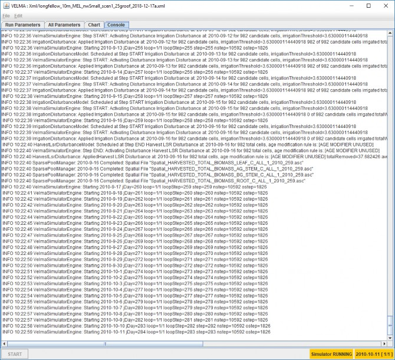Reviewing the Results of a VELMA Simulator Run
Section IV Topics:
- Results Location
- Types of Results
Results Location: Where Are Results Files Located?
VELMA simulation results are written to multiple files in a directory specified by the simulation configuration. You specified the output location in step 7 above, as part of loading and running a simulation, but if you've forgotten what the location was, you can find it using the "All Parameters" tab panel's parameters table:
- Click the drop-down selector button along the upper-right side of the All Parameters tab panel and open the panel's Parameters Outline selector list: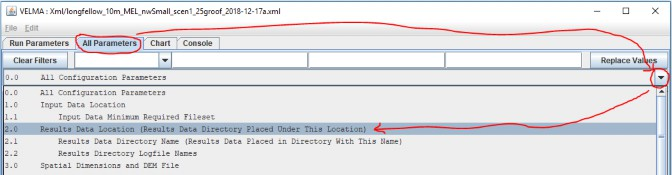
- Click "2.0 Results Data Location …" - this will populate the parameter column filters with a set of filter terms (circled in blue below) that filter down the parameters displayed in the table. In this case, the single parameter displayed is the one that specifies the location of your simulation run's results. That Parameter is 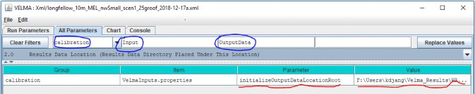
- The value (i.e. path) may be truncated by the bounds of the table's column width. You can click-drag the side of the GUI to make it wider, but a quick way to see the entire results location is to right-click the Value column field and select the "View Description" option in the context menu that opens:
This opens a small dialog box that contains the full value of the parameter:
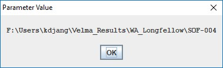(Unfortunately, you cannot click-highlight copy the text from this dialog window. Hopefully, we can implement that handy feature in the future.)
As mentioned above, the value of the initializeOutputDataLocationRoot parameter is not the directory that your simulation results are stored in. They are stored in a directory of their own, underneath the initializeOutputDataLocationRoot location. The name of your simulation results is specified by the run_index parameter. To find its value:
- In VELMA GUI's "All Parameter's tab panel, click the "Clear Filters" button, then type run_index (not leading or trailing whitespace, single underbar "_" character) into the middle filter text field, then press the Return (a.k.a. Enter) key: 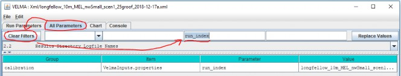
- The entire value may not be visible in the column's field - use the right-click "View Description" mentioned above to display the full name:
So, for the above examples, the simulator will write output files to the following directory:
F:\Users\kdjang\Velma_Results\WA_Longfellow\SOF- 004\longfellow_10m_MEL_nwSmall_scen1_25groof_2018-12-17a
Assuming you've run the example simulation (as outlined by this guide above) find the results directory for the
example simulation run on your computer and open that location in a File Explorer window.
Types of Results: What Data is Available in The Output Files?
As previously noted, a single VELMA simulation run produces multiple results files of various types of data. Here are descriptions of a few of the most pertinent for the example simulation you just ran.
GlobalStateLog.txt
This text file contains a copy of most of the information that is written to the VELMA GUI's "Console" panel. You can view its contents in a text editor (e.g. Microsoft's Notepad).
A successful simulation run should contain a log message like following near the bottom of the file:
INFO 10:45:54 VelmaSimulatorEngine: Simulation run completed.
You can search for this message in a PowerShell window using the Select-String command, as a quick way of verifying the simulation ran to completion:
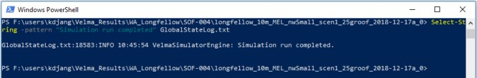If the simulation in the example screenshot above hadn't completed, the -Pattern "Simulation run completed" would not have been found in GlobalStateLog.txt and the Select-String command would have returned a blank line.
The GlobalStateLog.txt file contains only most - instead of all - of what is written to VELMA GUI's Console panel because setting up the GlobalStateLog.txt file itself is part of the VELMA simulator's initialization. Before that initialization is completed, VELMA can echo log messages to the Console window, but not to GlobalStateLog.txt - because it hasn't been initialized yet.
You can usually ignore this distinction. However, if you find a GlobalStateLog.txt file without the "Simulation run completed" message, but also no error or warning messages, then it's likely that an error occurred early in the simulator initialization process. Check the GUI's Console panel (use the panel's scroll bar, if necessary, to review the very top of the log) for warning or error messages.
DailyResults.csv
This is a file of comma-separated values (.csv) that reports a lot of the core data state of the VELMA simulator.
You can open this file in Notepad, but it's more useful to view it in Microsoft Excel, or load it into R for analysis.
Here's a screenshot of the first few rows of the example run's DailyResults.csv file:
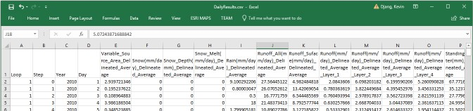Each row in the file is one simulation step's worth of data, and the first four columns in each row provide information about which simulation step the data is for.
Using Excel, provides a quick way to visualize DailyResults data via graphs.
Here is a graph of the first year's "Runoff_All" column data:
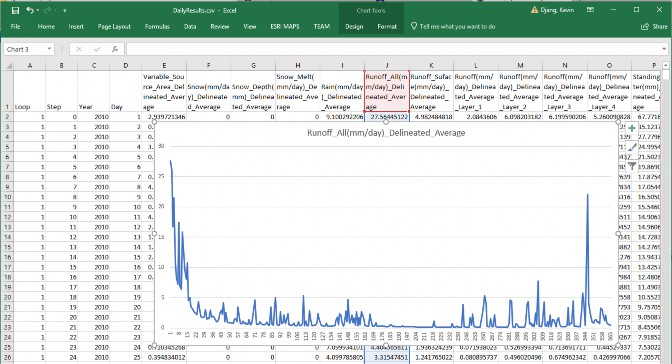Runoff_All is an important data column: it reports the amount of water (in mm/day) that flows out of the watershed's outlet. When observed data for the watershed is available (and converted to matching units) it can be compared to Runoff_All either graphically (i.e. as in Excel above), or numerically (e.g. calculation of a Nash-
Sutcliffe coefficient) to determine how well the simulated runoff matches reality.
(Unfortunately, we do not have observed runoff data for our example scenario.)
The majority of the data columns in DailyResults are "Delineated_Average" data.
Delineated averages are computed by summing the amounts for every cell in the watershed, then dividing the total by the number of cells in the watershed. The amount reported does not necessarily represent any specific cell amount, only any average.
DailyContaminantResults.csv
VELMA simulation configurations that include one or more contaminants will include a ContaminantResults.csv file as part of the output. As its name suggests, this file's structure mimics DailyResult's, but it contains different data in its columns (apart from the first four columns, which duplicate DailyResults).
For each contaminant configured in the simulation, it reports layer-specific, delineated-average daily amounts, along with surface and aggregate (i.e. not layer-specific) soil loss amounts. The loss amounts represent the amount of contaminant (in g/m2) transported out of the watershed each simulation day.
Our example simulation has one contaminant configured (Melamine), with cell-specific deposition during April of the second year of the simulation run, so VELMA generates a DailyContaminantResults file with data columns for Melamine.
Here is a screen capture of the DailyContaminantResults.csv in Excel, showing a few of the days surrounding the deposition:
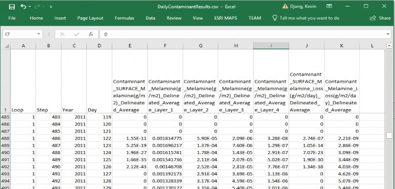Here is an example of using Excel's graphing functions to quickly view how the surface and per-layer delineated-
average amounts vary over the first 60 days after deposition:
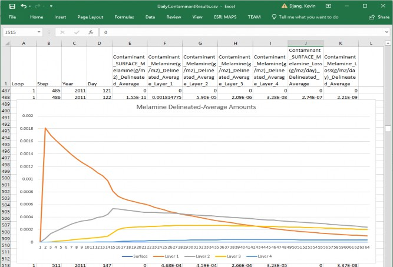Cell-Specific Results
As mentioned above, results in the DailyResults.csv file are mostly delineated averages. To gather cell-specific data, a simulation must specify one or more Cell Data Writers, or Spatial Data Writers as part of the simulation scenario's configuration.
A Cell Data Writer configuration tells the VELMA simulator to gather and report a wide variety of data for a specific cell location within the watershed. The results appear in a comma-separated value (.csv) file -- with a file name that includes the cell location -- in the output directory.
A Spatial Data Writer configuration tells the VELMA simulator to gather the amounts of one specific data type and report it for every cell. The results appear one or more Grid ASCII (.asc) map files - with file names that include the data type and simulation date-stamp - in the output directory.
Cell Data Writer Files
Our example simulation includes 3 Cell Data Writer configurations:
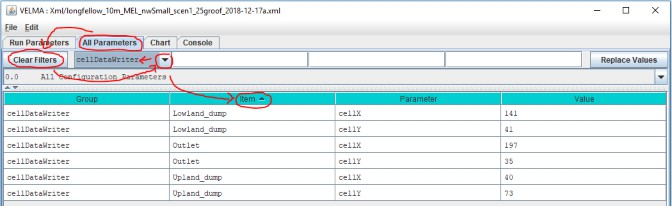As you can see, each configuration includes an Item name, and x and y cell location parameter values.
Each configuration generates cell-specific data in an output directory file with a cell-specific name (you can use the Powershell, as shown below, or Windows Explorer to obtain this information):
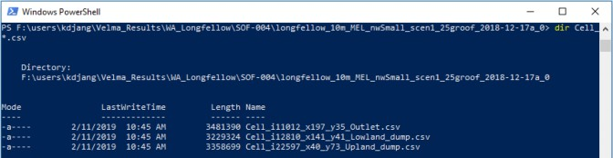Like DailyResults and DailyContaminantResults .csv files, a row of data in a Cell_ .csv file represents one simulation step, with specific data type amounts for that step in each column. However, unlike DailyResults, the data amounts are not averaged - they are raw amounts - and are specific to a cell location.
Here is a screen-capture of the upper-right corner of the Output Cell_ results .csv file opened in Excel:

When a simulation scenario includes Contaminants (as our example scenario does), Cell Data Writer files include rows for the Contaminant lateral flow (the amount hydrologically transferred out of the cell) and pool amounts (the raw amount in each layer of the cell and on the surface).
Here is a screen capture of our example scenario's outlet cell Melamine amounts for the first 60 days after deposition:
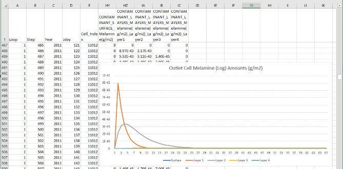Compare this with the DailyResults delineated-averaged graph of the average Melamine across the watershed. For the same time span, graphs show some general similiarity, but the specific amounts at the Outlet are distinct from the delineated-average of the watershed as a whole.
To further emphasize the distinction, here is a graph of the same simulation time span, but for one of the other Cell Data Writers configurations in our example. This Cell Data Writer was configured to capture data at one of the cells Melamine is deposited (unlike the outlet cell):
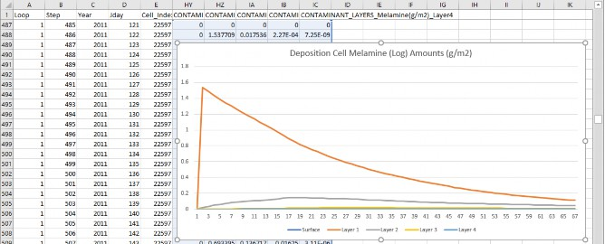For further information about Cell Data Writers, refer to:
Tutorial D.8 - Cell Data Writer Configuration
in the "HowTo" documentation folder for VELMA 2.1.
Spatial Data Writer Files
Our example simulation includes several Spatial Data Writer configurations. The following screen capture shows the "All Parmeters" table filtered to display the parameters for one of them:
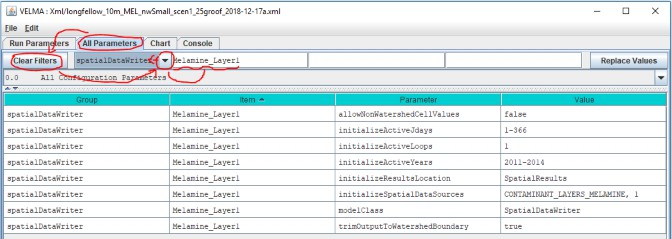Configuring a SpatialDataWriter requires more parameters than a Cell DataWriter, because the data pool and the simulation steps to capture must be specified for the simulator. This Spatial Data Writer above catpures the Melamine amounts in soil layer 1 (per the initializeSpatialDataSources parameter) for each day (simulation step) in the range of years [2011, 2014]. It will write the data as series of uniquely-named .asc files to a directory named "SpatialResults" (the initializeResultsLocation parameter's value) which the simulator will create as a subdirectory of primary output directory during the simulation run. (All of the Spatial Data Writer in our example simulation scenario are configured to report the same simulation states to the same initializeResultsLocation.)
Checking our example simulation output directory confirms that "SpatialResults" exists, and that it contains (a lot) of *.asc files:
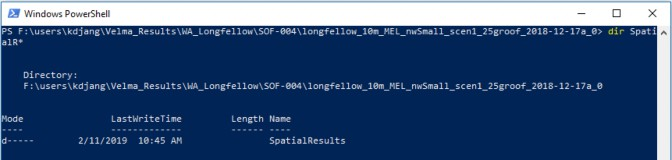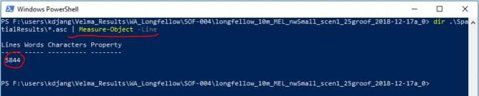The "| Measure-Object -Line" portion of the PowerShell command to list all *.asc files in .\SpatialResults directory redirects the command to report the number of files instead of listing their names.
The fact that we've generated 5,844 .asc files of spatially-explicit (i.e. map) data highlights a rule of thumb about Spatial Data Writers: each file written reports amounts for the every cell in the watershed, but only for one simulation step. To record one year's worth of Spatial Data for one data pool requires writing 365 (or 366 in a leap year) files, and this multiplies as more Spatial Data Writers are configured for more data pools. If you need spatially-expicit maps of the simulation's runtime behavior, this is worth the running time and disk space it incurs - however, it's prudent to ensure your computer has enough disk space before you start.
You can view the .asc files created by Spatial Data Writers in ESRI's GIS tools, or any GIS tools that support the ESRI Grid ASCII file format. You can also view them in VISTAs, or JPDEM, or open them in a simple text editor (e.g. Microsoft's Notepad) and cut-paste the contents into Excel. This last option is unwieldy for anything but small (in terms of row and column count) .asc files.
Spatial Data Writer file names are prefixed with the text "Spatial_", and have the dot-extension ".asc". Their names include the name of the data they report, and the loop, year and Julian day of the simulation run that the data was reported for.
As an example of finding specific file: referring to the contaminant data graph from the deposition cell's Cell Data Writer file in the previous section, Melamine first appears in soil layer 1 at the deposition cell on Julian day 122 of 2011. To look at the state of Melamine amounts in soil layer 1 fifteen days after that (Julian day 137), we need to find the .asc file with the following file name characteristics:
- The prefix "Spatial_"
- followed by the name of the data ("MELAMINE")
- followed by a Layer indicator ("L#1")
- ending with the loop, year and Julian day values ("1_2011_137" in this case)
- with ".asc" as the dot-extension suffix.
Without knowing the exact filename, this information should be enough to find the file we want, using the dir command, in a PowerShell window:
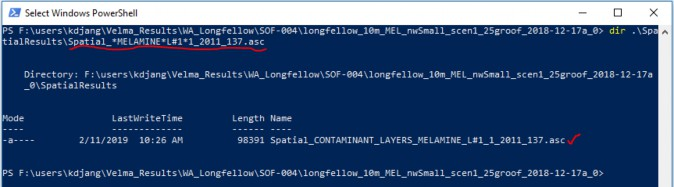Changing A VELMA Simulation Configuration
Section V. Topics
- Create a Copy
- Change the Copy
- Save Your Work
- Remove Obsolete Original Parameters
- Save Your Work(!)
This section demonstrates how to modify and existing VELMA simulation configuration to create a related, but different scenario: we'll use the original example introduced in this guide as a starting point, then change how and where its Melamine contaminant is deposited during the simulation run.
Create a Copy of the Original Example Simulation Configuration
- Start the VELMA GUI and load the longfellow_10m_MEL_nwSmall_scen1_25groof_2018-12-17a.xml configuration file, as described in parts II and III of this guide, however do not start the simulation running.
- The name of the example simulation is in the "Simulation Run Name" text field, in the upper-left corner of the GUI's "Run Parameters" page. Pro tip: click into the text box, then leave your mouse cursor hovering over it - after few seconds, a pop- up tool-tip message will appear, displaying the parameter's name.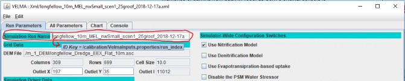
- Edit the value of the Simulation Run Name from: longfellow_10m_MELroads_nwSmall_scen1_25groof_2018-12-17a and then press the Tab key (The Return/Enter key will not do, you must press Tab).
- Click the File which opens the "Save Configuration to XML" dialog window: 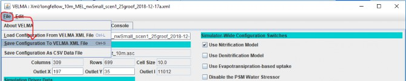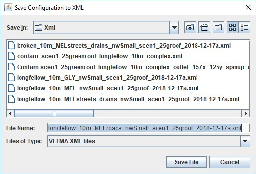
The dialog should open to the same directory that you loaded the original example configuration .xml file from, and the File Name should already contain the new Simulation Run Name you specified in step 3 above.
Click "Save File".
You now have a copy of the original example .xml file saved in the same directory under the new Simulation Run Name.
Change the Copy of the Simulation Configuration to Make a New Scenario
The original example scenario deposited 10g of Melamine onto the surface of one watershed cell on the 122nd day of 2001, and onto another watershed cell 60 days later in the same year. It used a Surface Deposition Disturbance configuration to do this. To view the Deposition Disturbance's configuration, click the "All Parameters" tab, then the Clear Filters button, then click the drop-down button and select "disturbance" in the Group selector filter. Finally, type Melamine_Dump into the Item filter text field:
Although this configuration has relatively few parameters, it is not evident where the deposition location and dates mentioned earlier are specified. That's because they are "hidden" inside file specified by the cellDepositionDataFileName parameter: its value is the name of a file that contains the deposition details:
Printing the contents of the file reveals the schedule:
22597,2011,122,10
12810,2012,182,10
The first number in each row is the linear index of a cell in the watershed.
The trio of numbers that follow indicate the year, Julian day, and the amount of contaminant to deposit on the cells surface.
The deposition data file can contain many more cells than this example, and each cell can have multiple trios of (year, jday, amounts) associated with it. This allows configuration of a wide variety of deposition scenarios.
However, VELMA provides another way to effect deposition of contaminants onto the cells of a simulation's watershed: specify a map (an .asc file) with deposition amounts, as well as when the amounts in the map should be applied to the cells. This kind of disturbance configuration is called a "Set Spatial Data by Map" disturbance, a long-winded name providing a good idea of its function.
VELMA allows multiple disturbance configurations within one overall simulation configuration, so let's add the
new disturbance before removing the old.
- In the VELMA GUI's All Parameters tab, click the Edit ->Disturbances ->"Add a Disturbance" sub-menu item.
- In the "Specify Disturbance Model Type and Name" dialog, click the drop-down list of the "Disturbance Type" selector and select "SetSpatialDataByMapDisturbanceModel". (You may have to sroll down in the list to see it):

- Specify the Disturbance Name as "Melamine_Roads", then press the Tab key. (You must press the Tab key, the Return/Enter won't do for this step.) At this point, the "Disturbance Name" label should stop displaying in red. Click the OK button.
- The All Parameters tab panel should be automatically filtered to display the new disturbance parameters it's parameterization table:
- Some parameter's values are filled in by default, while others are highlighted in yellow to indicate that their values are missing.
Click into the "Value" column fields of the following parameters and set their values as follows:
- initializeActiveJdays = 122
- initializeActiveLoops = 1
- initializeActiveYears = 2011
- not change the modelClass parameter's value: its default is correct as-is.
- occursAtStepStart = true (edit the default "false" to "true")
- The above parameterization causes deposition on the same date as the first of the two cells in the original example's Surface Deposition Disturbance configuration.
- spatialDataFileFullName = ./o_9_Disturbance/ContaminantDepo/AllRoadCells_1d0.asc
The above file and location are part of the example simulation's DataInputs files collection.
The AllRoadCells_1d0.asc file specifies 1.0 (grams) for every cell identified as a road cell within the simulation watershed's DEM map area, and 0.0 grams for every other cell in the map. Preparing this map is not a trivial undertaking, and requires GIS tools and expertise. Refer to other sources for further information.
- spatialDataLayer = 1
- spatialDataName = CONTAMINANT_SURFACE_MELAMINE
The parameters above tell the disturbance which data pool to deposit amounts into, and which layer of the pool.
The disturbance's parameterization should now look like this:
Save Your Work!
Take a moment to save the new scenario's current state, by repeating step 4 from the "Create a Copy …"
instructions above. This time, when you click the "Save File" button, the GUI will warn you that you are about to overwrite an existing .xml file.
That's what you want in this case, so click "Yes" to save/overwrite and proceed.
Remove the Original Example's Surface Deposition Disturbance From the New Scenario
Now that we've added a new contaminant deposition (by way of the Set-by-Map disturbance) to the new
scenario, we can remove the original scenario's deposition disturbance.
- Click the Edit
- In the "Select the Disturbance Items to REMOVE", click the checkbox for the "Melamine_Dump" SurfaceDepositionDisturbanceModel in the SELECT column of the table: Then click the OK button at the bottom of the dialog box, and the OK button at the bottom of the subsequent confirmation box:
- You can confirm that the original "Melamine_Dump" disturbance has been removed by click "Clear Filters" then selecting the "disturbance" drop-down filter, and typing
Save Your Work!
Repeat step 4 from the "Create a Copy …" instructions above.
Run the New Scenario
Section VI Topics:
- Start the New Scenario
- Contaminant-specific Runtime Displays
- Comparison of Results
At this point you can click the Start button and run the new scenario, or, if you closed the VELMA GUI after saving the new scenario to an .xml file, re-start the GUI and re-load the new scenario, then start the scenario running.
Contaminant Runtime Displays
When the GUI is running a scenario that includes one or more contaminant configurations, the GUI provides two types of displays for charting contaminant amounts during the simulation run:
When the new scenario simulation run reaches the 2nd year (2011) select "Contaminant Melamine".
The "Contaminant Melamine" display shows spatially-explicit contaminant amounts for the surface and for the sum of the amounts in the soil layers, as well as the daily, delineated-average amount in the watershed:
(The Daily Averaged values displayed in the bottom chart are the same values reported for surface and layers in the DailyContaminantsResults.csv file.)
Notice that the spatial (map) portions of the display chart the Log10(amount) value per cell.
The total range of amounts can be several orders of magnitude. Displaying using a log scale provides a color ramp that is easier to see.
When the new scenario simulation run reaches the middle of the 3rd year (2012), select "Contaminant Melamine Layers Spatial". This display shows spatially-explicit, layer-specific contaminant amounts for each of the four soil layers:
A Quick Comparison / Contrast Between the Original and Modified (New) Scenarios
The difference between our two example simulation scenarios is where we deposit the contaminant onto the
surface of the watershed's cells. However, in both scenarios, the first deposition occurs the same day of 2011.
With that in mind, here are the spatial portions of the "Contaminant Melamine" displays for both simulations, on the same day, shortly after deposition.
Original Scenario: Deposition at a specific cell:
Modified (New) Scenario: Deposition on all road cells:
Some points to keep in mind while comparing the displays above:
- Melamine is relatively soluble and travels readily when waterflow occurs.
- In the example watershed, the highest and steepest cell elevations are along the west (left) side of the map. This seems to explain the rapid development of a melamine plume at that location, that is, steep slopes favor rapid runoff from impermeable roads onto more permeable off-road surfaces.
- The original example's deposition cell location has high permeability, while road cells do not.
For additional information on how permeability is specified, see:
Tutorial E.1 - Mapping Surface Layer PermeabilitiesAppendix 1 - Miscellaneous Tips and Shortcuts
Appendix 1 - Miscellaneous Tips and Shortcuts
How To Avoid Typing File Paths in Windows 10
You can avoid typing the name of a directory name as a parameter for VELMA by instead finding it in a File Explorer window and copy-pasting it from there.
Navigate the File Explorer to the desired directory, double-click the location name text box, then right-click and click the Copy item. (Pro Tip: after double-clicking to highlight-select, you can type Ctrl-c instead of using the "Copy" menu item.)
The text of the full path to the File Explorer's current location is now copied to the Windows system clipboard.
You can right-click Paste (Pro Tip: or type Ctrl-v) that location text into VELMA parameter value fields, or onto the command line of a PowerShell.
Whitespace in Paths in Windows 10 and VELMA
The Windows 10 PowerShell console window separates text typed onto its command line by whitespace. This means that any directory or file path containing whitespace must be enclosed in double-quote characters to preserve the entire path as a single element on the command line.
For example, without quotes, the following path:
C:\User\dpines\a\path with some\whitespace\foo.txt
Is "seen" by the PowerShell console as three separate elements:
"C:\User\dpines\a\path", "with", and "some\whitespace\foo.txt"
To force PowerShell to "see" the path as a single element, it needs to be enclosed in double-quotes, like this:
"C:\User\dpines\a\path with some\whitespace\foo.txt"
However, when paths containing whitespace are specified as parameter values in the VELMA GUI, they must not be enclosed in double-quotes.
Windows 10 Path Separators and VELMA
Windows 10 uses the backslash "\" character as a separator between directory and file names.
Example:
C:\this\that\and\the\other.txt
Other operating systems (e.g. OSX and Linux) use the forward-slash "/" character.
VELMA tries to be platform-neutral about path separators. When you specify a path, file, or path-and-file name as a VELMA configuration parameter in the VELMA GUI's "Run Parameters" and "All Parameters" panels, you should be able to use either the backslash "\" or forward-slash "/" character as a separator. However, the following rules of thumb apply:
- Within a single path, please be consistent. For example, don't specify: C:\this/that\and/the/other.txt
- Although it tries to accept both, VELMA prefers forward-slash path separators. If VELMA is rejecting an otherwise-legitimate, directory or file parameter value, edit its name to use forward-slashes and see if this resolves the issue.
Drag-and-Drop Simulation Configuration Scenario Files into VELMA GUI
Instead of using the File "Load Configuration From VELMA XML File" menu item to load a VELMA scenario, you can locate the file in Windows File Explorer, then click-select-drag that file onto the VELMA GUI and unclick ("drop") it
Caveat: There are only 2 areas within the GUI where you may successfully "drop" .xml files:
- The main table area of the "All Parameters" tab panel:
- The upper (i.e. non-Notes) area of the "Run Parameters" tab panel:

In both cases, if the .xml file is a valid VELMA simulation configuration file, the GUI loads its contents.